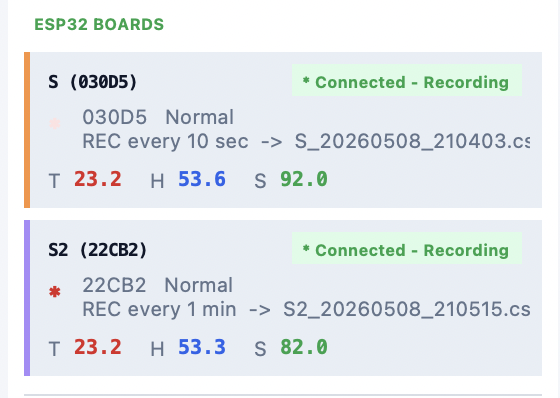
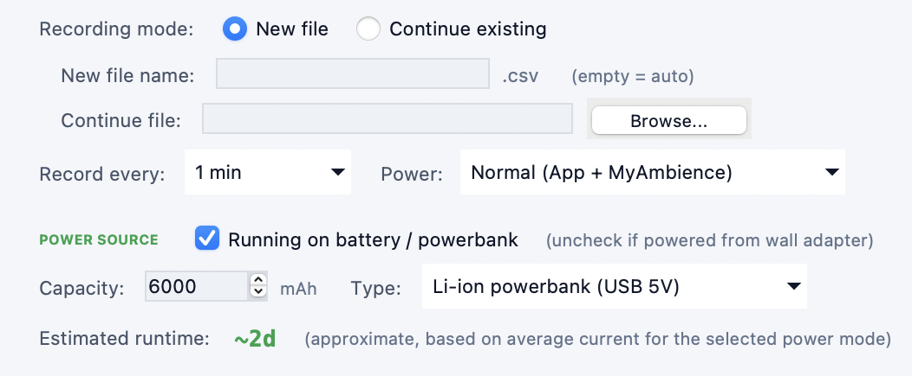
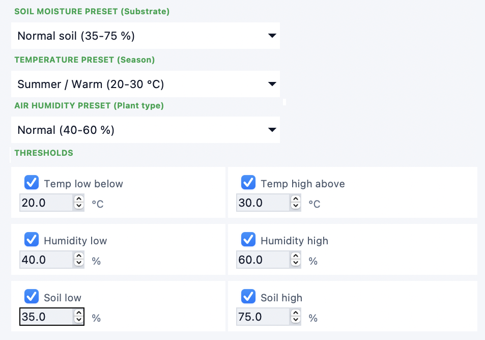
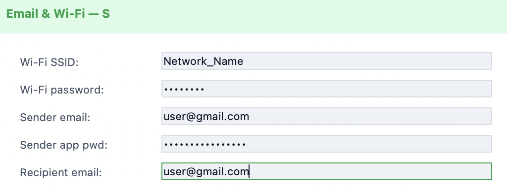
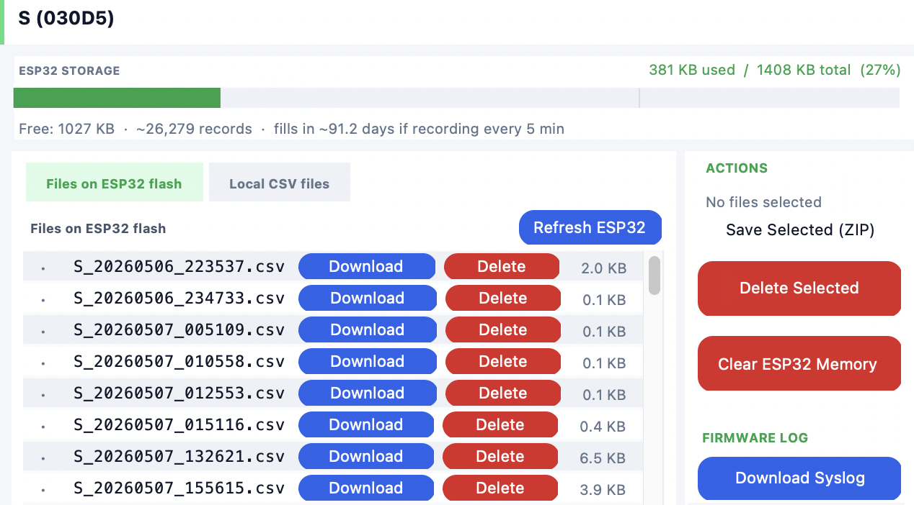
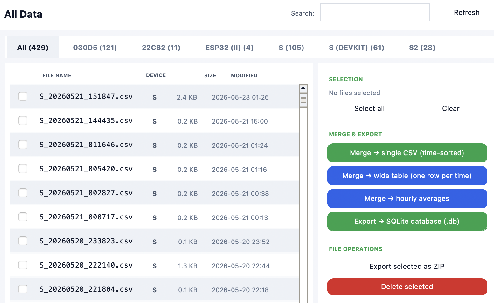

How to set up and use the system: flashing the firmware, installing the app, connecting nodes, recording, power modes, email alerts and managing data. Written by me; here in English and Polish.





